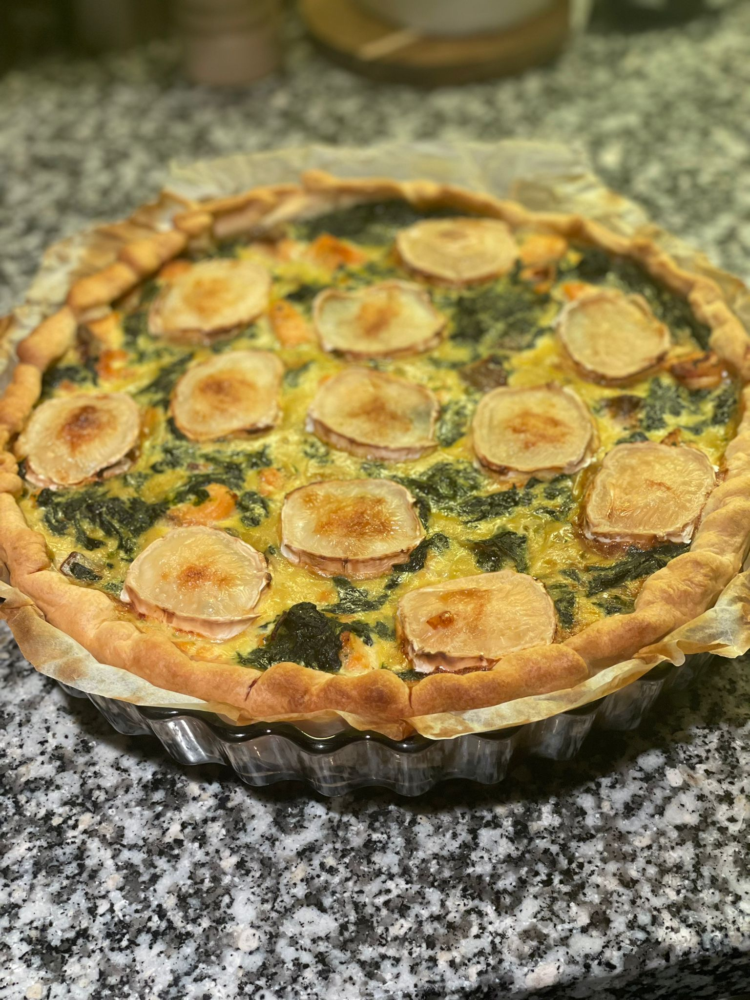

Tuttifrigi midweek-lump quiche

See above the first quiche ever cooked in the household, to celebrate the French milestone of owning its first quiche mold of a lifetime, confirming lifetime passport validity
Recipe description:
Last minute hosting at home, on a schedule and nothing but wrinkled-looking veggies in the fridge?
No worries, gather whichever veggies you have, make sure to have some pre-made dough, milk, eggs and ideally some cheese to grate and you're good to go!
Ingredients:
- store-bought dough (any type works as long as it's not sweet)
- 3 to 4 medium-sized eggs
- milk (up to 500 mL)
- grated cheese, any kind works
- salt, pepper to taste
- spices and herbs (optional)
- ... and whichever veggie and protein you decide to use for your variation-of-the-day
Steps:
- Whisk the eggs energetically, should look foamy
- Add in the milk, until mid-liquidy
- Add in the veggies, sauteed before-hand if necessary
- Add spices, herbs and grated cheese
- Cover the mold with the store-bought dough, poke holes with a fork to avoid bubbles
- Pour in the liquid mix
- Bake for up to 30 minutes, until the dough and top looks golden at 200 degrees Celsius
Pro-tip:
Try any flavor and don't be afraid to experiment. Caramelized onions are a great touch!
Back to homepage